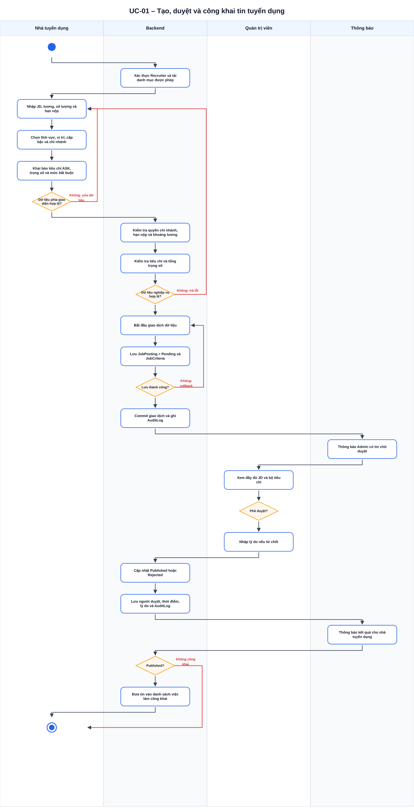
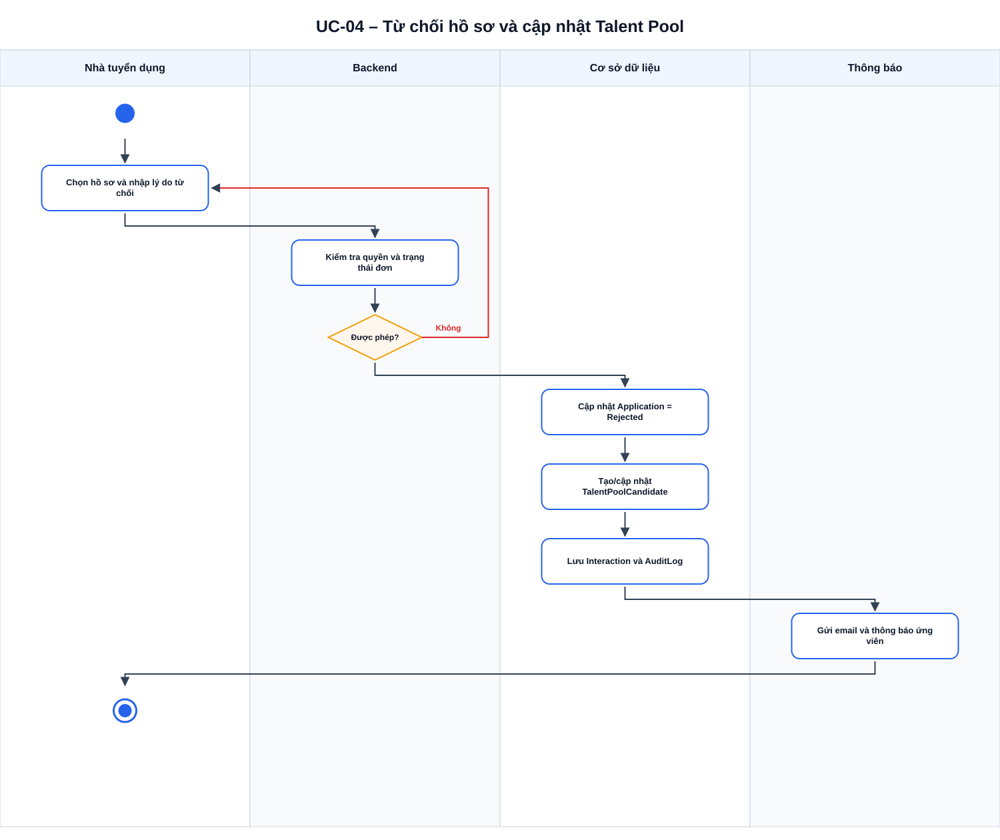
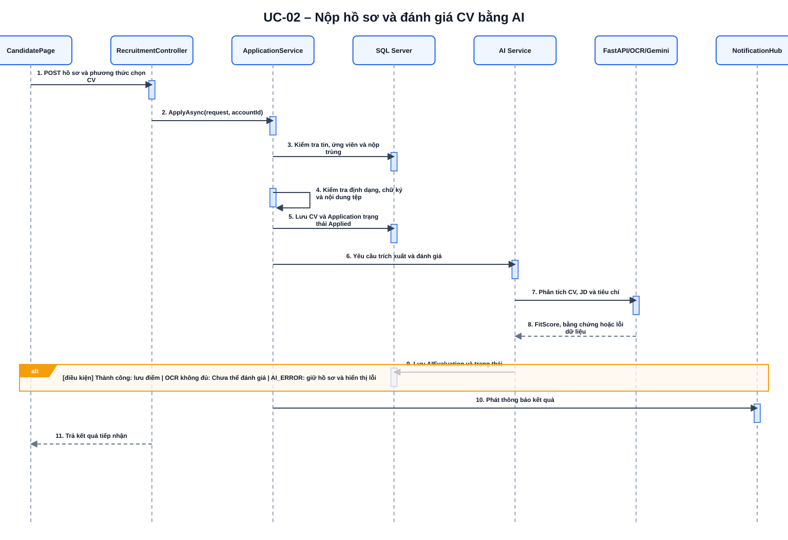
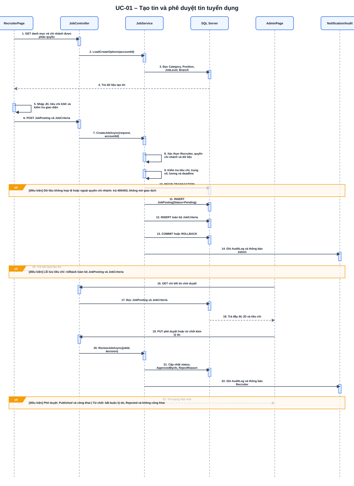
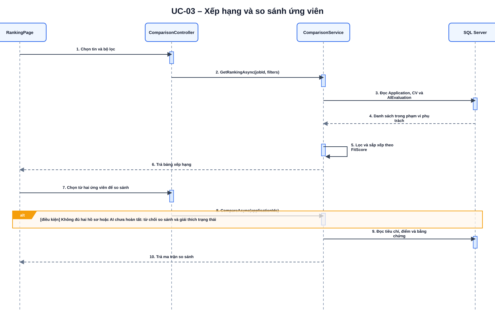
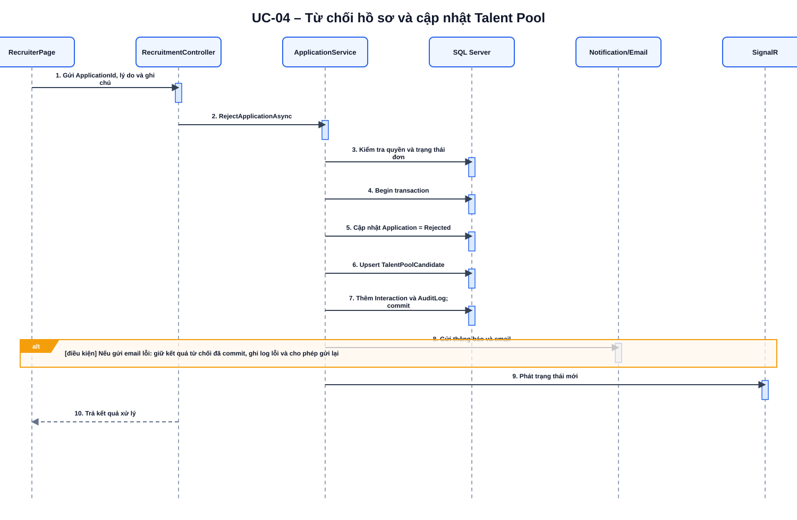
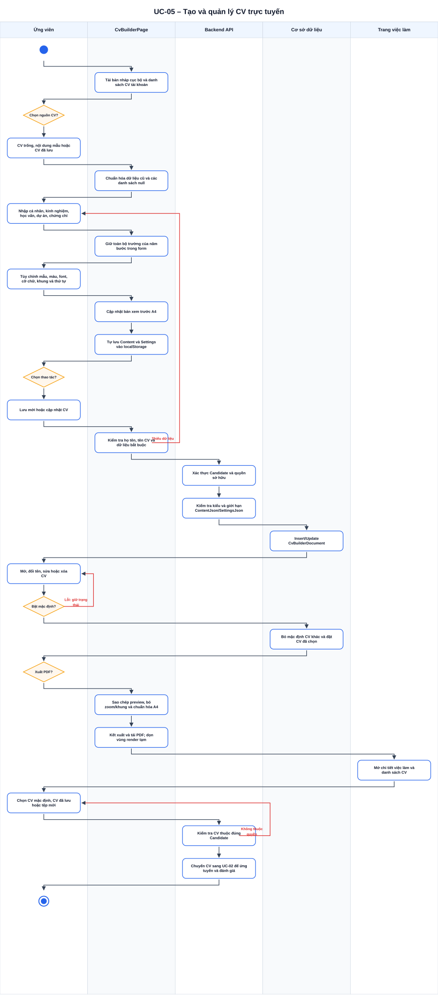
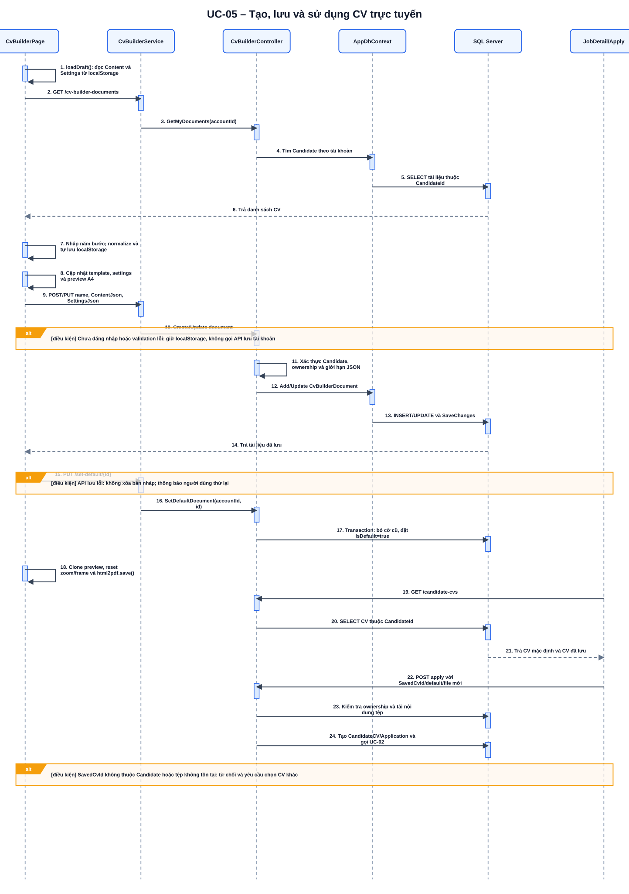

Tám sơ đồ Activity và Sequence tham khảo
Mở từng hình ở tab mới để phóng lớn, sau đó dựng lại trong StarUML.
1. Activity UC-01 – Tạo và duyệt tin

2. Activity UC-04 – Từ chối và Talent Pool

3. Sequence UC-02 – Nộp CV và AI

4. Sequence UC-01 – Tạo và duyệt tin

5. Sequence UC-03 – Xếp hạng và so sánh

6. Sequence UC-04 – Từ chối và Talent Pool

7. Activity UC-05 – Tạo và quản lý CV

8. Sequence UC-05 – Tạo, lưu và sử dụng CV
